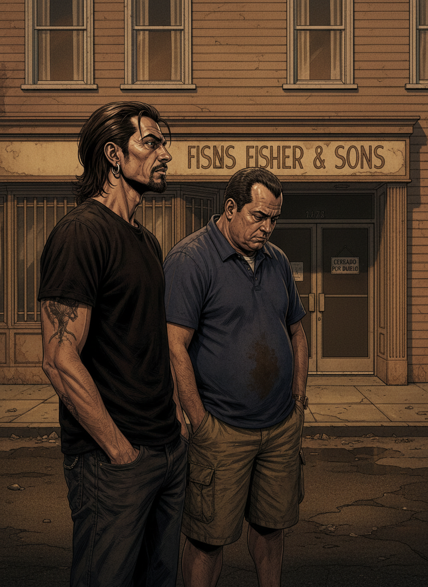

Escena 1 — Una funeraria

TONI
"Rulo. Es una funeraria. ¿Vamos a ver una serie que pasa en una funeraria?"
RULO
"Una familia que lleva una funeraria en LA. El patriarca muere en el primer episodio atropellado por un autobús mientras conduce el coche fúnebre en Nochebuena. — ... — Eso es solo el principio."
Los Ángeles. Fisher & Sons. Noche.
Escena 2 — Nate, el que huyó

TONI
"Peter Krause. Nate. El hijo que huyó y tuvo que volver."
RULO
"El que escapó de la familia y descubre que la familia le alcanza igual. Solo que aquí el pasado es literalmente un cadáver. — Exacto."
Escena 3 — David, el que se quedó

TONI
"Michael C. Hall. David. El hermano que se quedó."
RULO
"El que lleva todo el peso. El que tiene más secretos que el archivo de la CIA. Y cuando deja de guardárselos, la serie da un salto enorme."
EVERYBODY DIES
cada episodio empieza con una muerte
Escena 4 — Ruth, la madre

TONI
"Frances Conroy. Ruth Fisher. La madre."
RULO
"Treinta años siendo exactamente lo que se suponía que debía ser. Y cuando muere su marido descubre que no sabe quién es. — Eso duele. — Pero no es oscuro. Es verdadero."
Escena 5 — Federico

TONI
"Freddy Rodríguez. Federico. El empleado."
RULO
"El personaje más infravalorado. Su propio arco, sus sueños, su tragedia. No es el secundario gracioso: es una persona completa. Alan Ball no dejó a nadie sin historia."
Escena 6 — Claire

TONI
"Lauren Ambrose. Claire. La hija pequeña."
RULO
"La que creció dentro de una funeraria e intenta entender qué significa eso. La serie entera es la respuesta. Y cuando lo entiende, ese momento vale toda la serie."
Escena 7 — El velatorio

TONI
"¿Por qué cada episodio empieza con alguien muriendo?"
RULO
"Porque la serie no es sobre la muerte. Es sobre cómo la muerte te obliga a mirar tu propia vida. Funciona de una manera que no funciona casi ninguna otra serie."
"Los muertos nunca se van
del todo. Los llevamos
con nosotros."
— A dos metros bajo tierra
Escena 8 — Los muertos hablan

El jardín trasero. Noche. Uno de los muertos se sienta a su lado.
TONI
"Los muertos hablan. ¿Eso es realismo mágico?"
RULO
"Es Alan Ball diciendo que los muertos nunca se van del todo. Al principio es raro. Después es lo más natural del mundo."
Escena 9 — La familia

TONI
"¿Cómo puede ser que una familia tan disfuncional me caiga tan bien?"
RULO
"Porque son honestos en su disfunción. Solo intentan sobrevivir juntos. — Como todas las familias. — Como todas las familias."
Escena 10 — La temporada 4

TONI
"Rulo. Esta temporada... ¿Merece la pena aguantar?"
RULO
"Es más irregular, lo sé. Porque Ball estaba pensando en el final, y el camino a veces cuesta. La temporada 5 es la respuesta."
CERRADO POR DUELO
Fisher & Sons
Escena 11 — El último episodio

TONI
"Rulo. No me digas cómo acaba."
RULO
"No hace falta. — ¿Es tan bueno? — Es el mejor final televisivo de la historia. No hay debate."
Escena 12 — El remate

TONI
"Diez minutos. No he podido hablar diez minutos después de verlo."
RULO
"Nadie puede."
TONI
"El mejor final de la historia. — El mejor final de la historia."
Everybody dies. But not everybody lives. 9,5.
⭐ Veredicto de Rulo y Toni ⭐
9.5
LA SERIE QUE TE ENSEÑA A VIVIR
Una familia que lleva una funeraria y cinco temporadas explorando todo lo que los vivos no se atreven a decirse. Los personajes más honestos de la televisión americana. El humor más negro. Y el mejor final televisivo de la historia, sin debate. Alan Ball hizo algo que no debería ser posible: una serie sobre la muerte que te enseña a vivir. Me dijeron funeraria. Me encontré con la serie más viva que he visto en mi vida.